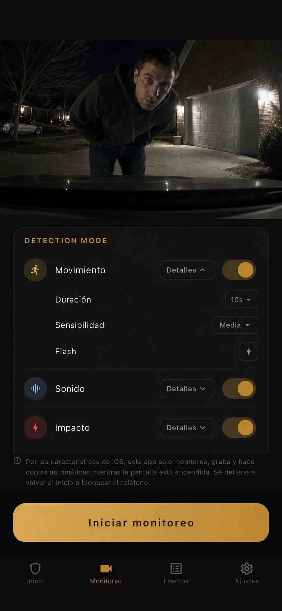

Detección de movimiento
Observa la vista de la cámara para detectar movimiento humano y usa procesamiento en el dispositivo para enfocarse en cambios relevantes de la escena.
Convierte un iPhone que ya no usas en un dispositivo para registrar pruebas de golpes, golpes de puerta, abolladuras en la puerta, vandalismo e intentos de robo.
Vigila tu coche cuando está aparcado en restaurantes, centros comerciales, aparcamientos de edificios residenciales, entradas privadas y la calle.
Pruebas primero
Parking Guard usa un móvil de repuesto para conservar clips y fotogramas útiles antes y después del incidente. Así puedes revisar qué pasó y decidir qué compartir con el seguro, la administración del lugar o las autoridades.


Cómo funciona
El salpicadero, el parabrisas o un soporte interior pueden apuntar al área donde es más probable que ocurran golpes de puerta, golpes al aparcar o vandalismo.
Elige movimiento, sonido, impacto o cualquier combinación. Cada modo de detección tiene tres niveles de sensibilidad. Para reducir el consumo de batería, puedes apagar la vista de cámara o atenuar toda la pantalla.
Cuando se activa una detección, Parking Guard guarda un fotograma de ese momento e inicia el vídeo desde 3 segundos antes. La grabación posterior puede configurarse en 10, 20 o 30 segundos.
Los eventos siguen disponibles sin conexión. Guarda la imagen o el vídeo en Fotos, usa la copia opcional en Google Drive o recibe notificaciones de Gmail.

Detección
Los aparcamientos son impredecibles. Una app útil de cámara para aparcamiento debe reaccionar a más de una señal, por eso Parking Guard permite ajustar por separado movimiento, sonido e impacto. También puede enviarte un aviso a tu cuenta de Gmail cuando se activa una detección.
Observa la vista de la cámara para detectar movimiento humano y usa procesamiento en el dispositivo para enfocarse en cambios relevantes de la escena.
Usa el micrófono del móvil para detectar desde ruidos fuertes de contacto o choque hasta sonidos más bajos como voces o conversaciones.
Usa los sensores de movimiento del móvil para detectar golpes, sacudidas o contacto. Si lo usas como dash cam, puedes configurar la sensibilidad baja o en nivel bajo para que las vibraciones normales al conducir activen menos detecciones.
Cuando se activa cualquiera de los modos seleccionados, Parking Guard puede hacer parpadear el flash del móvil con brillo máximo. Tú eliges qué modos de detección pueden activar el flash.

Privacidad por diseño
Parking Guard está diseñado alrededor del almacenamiento local de pruebas, por lo que puede usarse sin conexión. Los vídeos de aparcamiento pueden guardarse en tu móvil o copiarse automáticamente en Google Drive. No se envían a ningún otro lugar.
Límites claros
Una app confiable para pruebas de aparcamiento explica con claridad tanto lo que puede hacer como sus límites.
Por las reglas de iOS, la vigilancia en iPhone funciona solo mientras la app permanece abierta. Volver a la pantalla de inicio o bloquear la pantalla detiene la vigilancia.
El uso recomendado es vigilancia breve mientras comes, compras, haces trámites o aparcas en un edificio residencial. No se recomienda usarla durante mucho tiempo dentro de un coche caliente en verano.
En dispositivos con poca memoria (2 GB o menos), Parking Guard reduce automáticamente la carga de grabación, incluida una captura previa más corta y calidad estándar.
FAQ
Respuestas breves para quienes comparan Parking Guard con el modo de aparcamiento de una dash cam, apps de cámara en un móvil de repuesto y apps generales de seguridad para coches.
No. Parking Guard se centra en pruebas de coches aparcados usando un móvil de repuesto. Una dash cam dedicada puede seguir siendo mejor para grabación constante al conducir o durante toda la noche.
Para golpes en aparcamiento, golpes de puerta, abolladuras en la puerta, vandalismo, contacto sospechoso e intentos de robo donde un vídeo o fotograma puede ayudar a aclarar qué ocurrió.
Sí. Las pruebas se guardan localmente primero. Internet solo se necesita para la copia opcional en Google Drive o la notificación por Gmail.
Parking Guard admite inglés, alemán, español y japonés.
Precio
Parking Guard está disponible por €7.99 al mes.